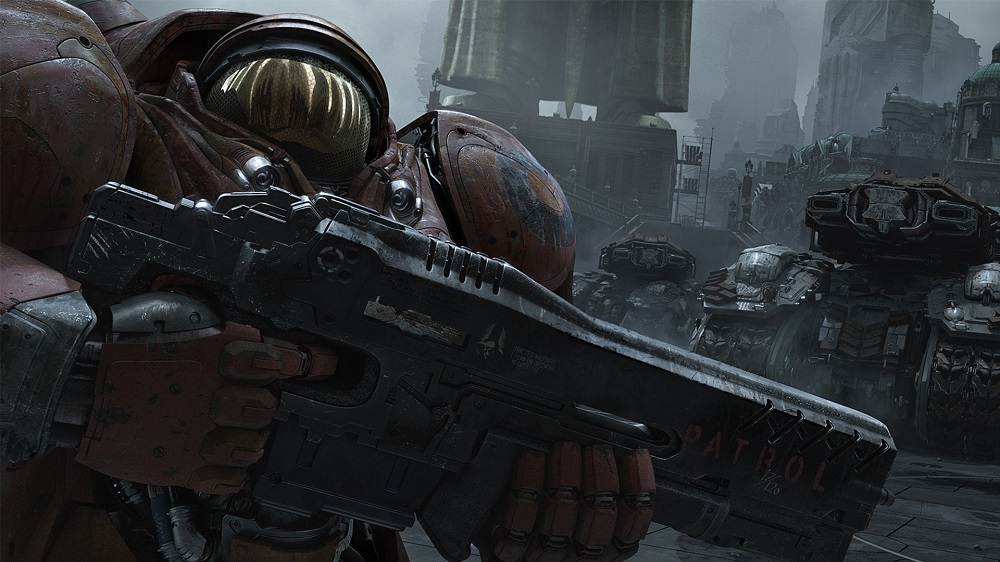
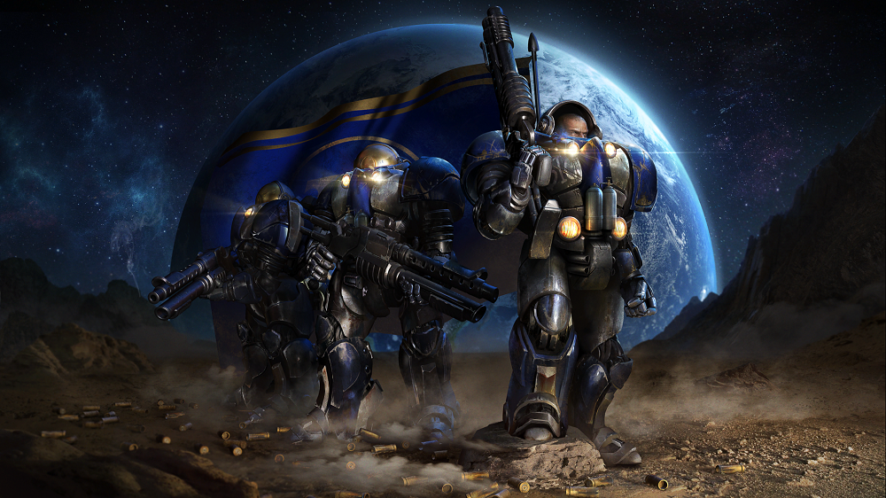
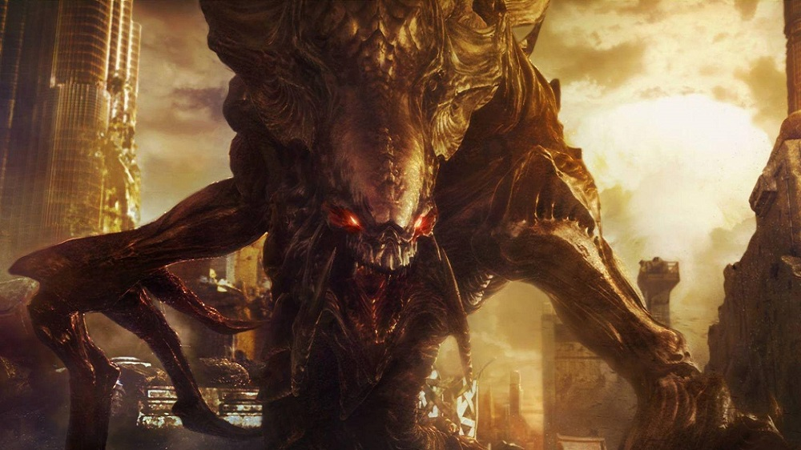
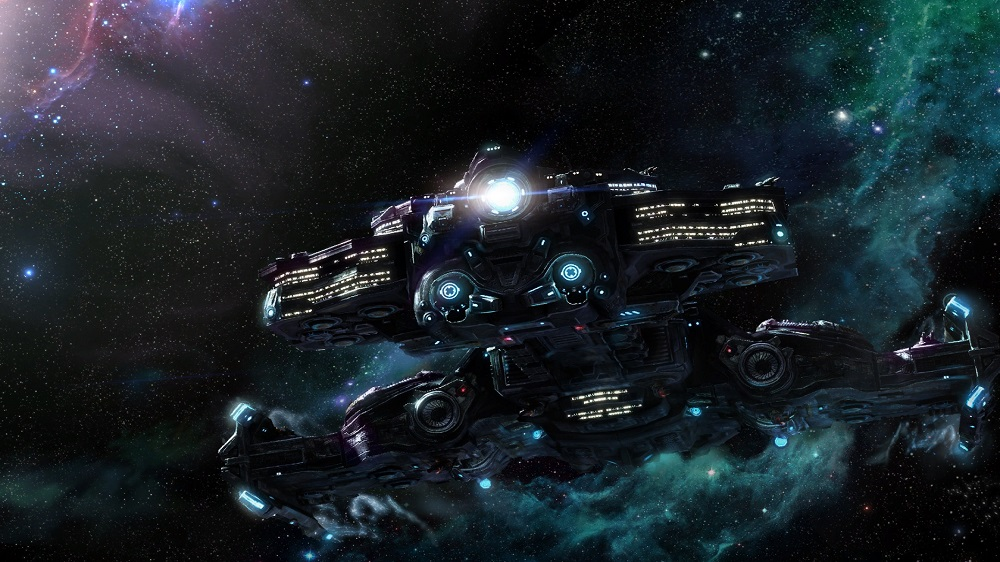
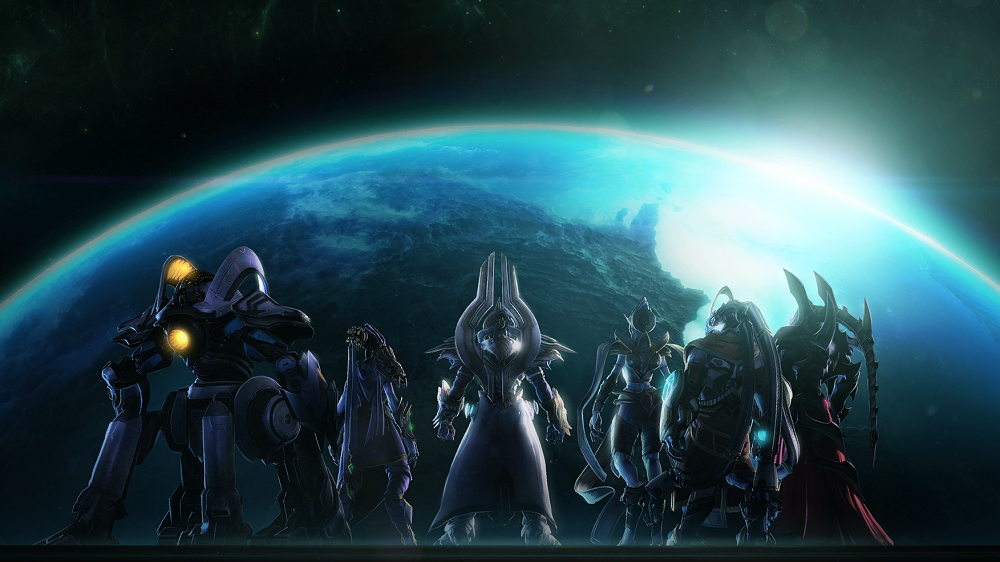

StarCraft II is a science fiction real-time strategy video game developed by Blizzard Entertainment.
It has several game modes, including single-player campaign, multiplayer mode, custom mode and cooperation mode.
In game, there are three different races: brave Terran, greedy Zerg and noble Protoss. As players, you can choose any one of them.
If you are confident with your skills, you can experience the most competitive mode: multiplayer mode.
But if you just want to have fun and relax, you can choose to play cooperation mode.
In cooperation mode, we have 18 different commanders, choose your favorite and use powerful skills!




